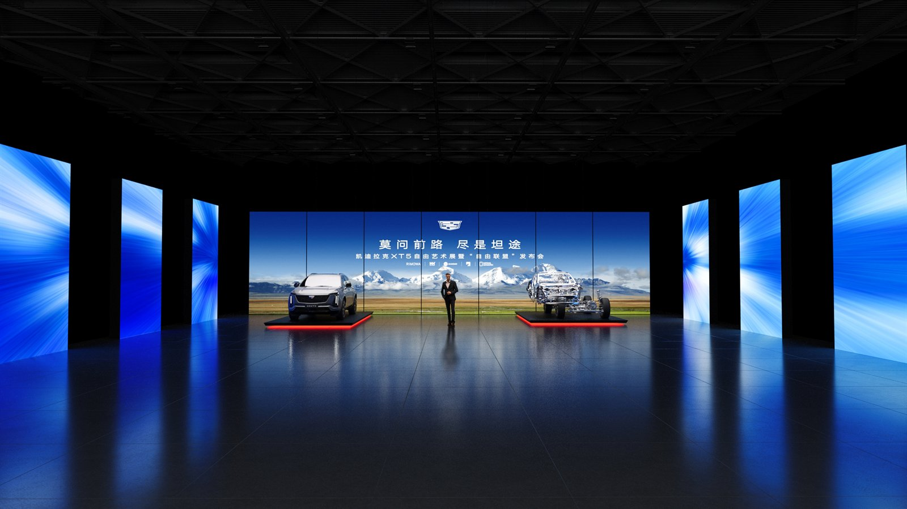
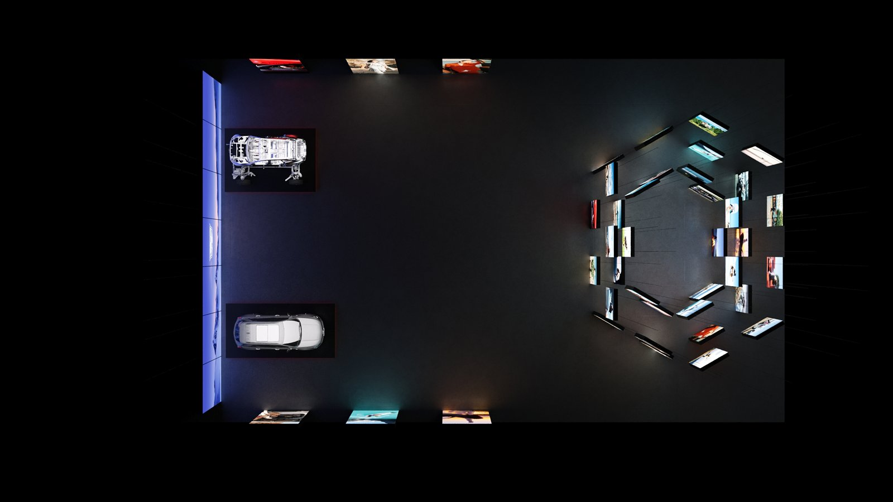

XT5 蜂鸟部落

车辆发布与悬屏影像展览共用一个空间，观看从正面看车转向绕着影像走。
项目概况
舞台以山湖画面建立场景，整车和车身结构分列两侧，中间留给人物与演示。正面的长屏和两侧竖屏把视线引向车辆。
另一端的悬屏围合成环。竖屏错开高度并留出间隙，观众走动时能从前排屏幕之间看到后排影像。
主舞台
山湖画面为发布现场建立全路况语境，车身结构则让观众能把话题落到车上。正面的舞台视角交代整车、屏幕与技术展示的关系。


环形山景屏悬在车身结构上方，地面只留一道红色台沿。上下分开后，景观有足够尺度，裸露的车身构件也清楚可见。

两侧竖屏把视线引向主屏。整车与车身结构分列两侧，中间留给人物与演示。
场地布局
把长屏舞台和环形屏幕装置分置两端，中间留出宽阔的过渡区，让观众可以在集中观看和自由走动之间切换。

整车与车身结构分列舞台两侧，给中央留出通道。另一端的屏幕围合成环，平面上就能看出两种观看方式。
完整图集
14 张作品